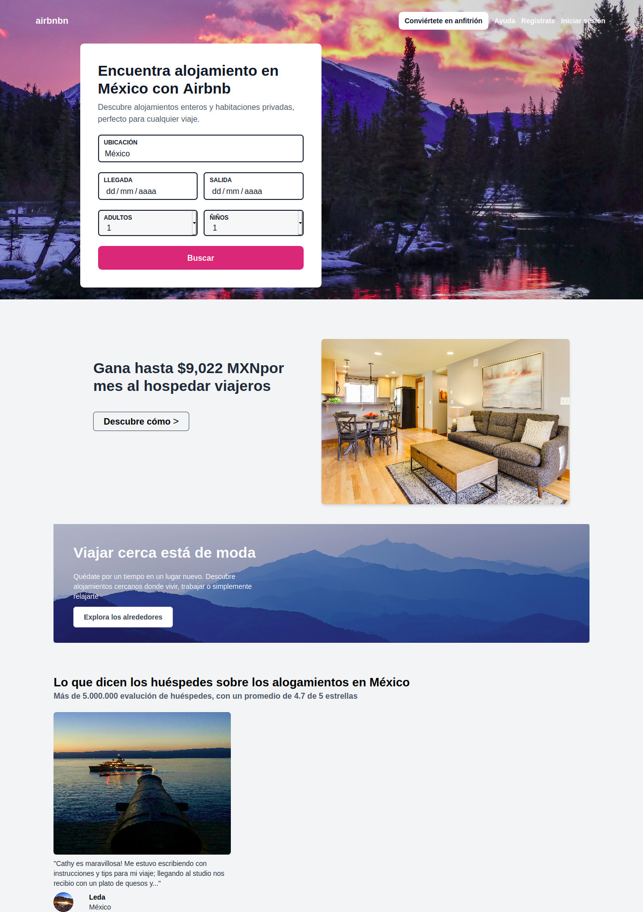

Airbnb Clone con HTML5 Y Tailwindcss
Plataforma de alojamientos
Descripción:
Airbnb es una plataforma de alojamientos que permite a los turistas encontrar habitación o lugares donde quedarse durante sus viajes o vacaciones.
Esta es una práctica que realicé como parte de mejorar mis habilidades, en donde lo que hice fue tratar de clonar este sitio desde cero, utilizando html 5, y el framework de Tailwindcss.
Como resultado obtenido le dejo las siguientes imágenes.

Para realizar este sitio las herramientas que se utilizaon son las siguientes
- HTML 5
- CSS 3
- Javascript (ES6)
- TailwindCSS
- VS code